Clasificación de las redes¶
Para facilitar su estudio, la mayoría de las redes de datos se han clasificado atendiendo a distintos criterios como son la distancia, la tecnología, la ubicación de los recursos y/o servicios, etc. Vamos a estudiar las siguientes clasificaciones:
Clasificación de las redes atendiendo a la titularidad¶
de la red¶
Esta clasificación atiende a la propiedad de la red. Podemos encontrar:
- Redes dedicadas o privadas : Tienen un propietario no público. Todo su recorrido es propiedad del poseedor de la red. Solo tienen acceso a la misma usuarios autorizados. Ejemplos: La red de un instituto o empres, un red doméstica, una VPN que conecta empleados a la red interna de la empresa.
- Redes compartidas o públicas : Son redes de titularidad pública. Las líneas de comunicación soportan información de diferentes usuarios. Se trata en todo caso de redes de servicio público ofertadas por compañías de telecomunicaciones bajo cuotas de alquiler en función de la utilización realizada. Pertenece a este grupo la redes telefónicas conmutadas (RTB) y las redes especiales para transmisión de datos cableadas(ADSL, fibra óptica) y móviles (GSM, 3G, HDSPA, 5G).
- Redes dedicadas : Son un punto intermedio entre las redes privadas y públicas. Se trata de redes públicas, cuyo uso está limitado a ciertos grupos. Por ejemplo, una red especial solo para universidades. O una red de cajeros automáticos de un banco.
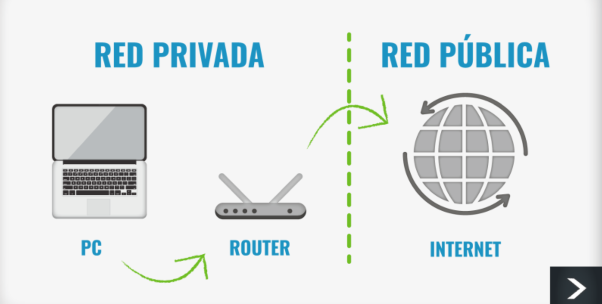
Clasificación de las redes atendiendo a la topología¶
Esta clasificación tiene en cuenta la arquitectura de la red, es decir, la forma en la que se interconectan los diferentes equipos informáticos o usuarios a ella:
- Malla: Cada dispositivo está conectado a múltiples otros dispositivos. Es muy resistente a fallos, pero puede ser cara y compleja de implementar.
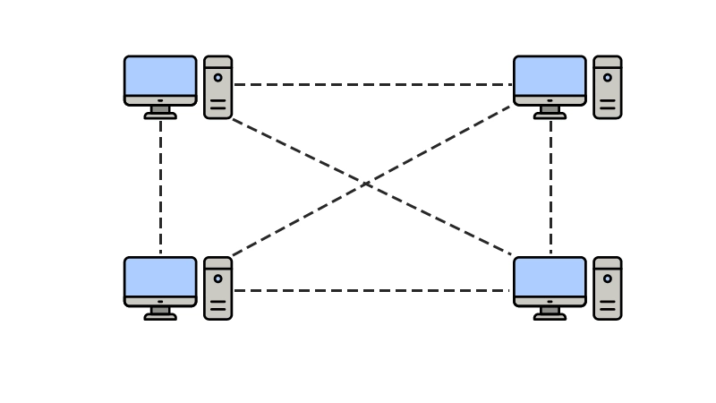
- Estrella: Los equipos se conectarán a un nodo central con funciones de distribución, conmutación y control. Si el nodo central falla, quedará inutilizada toda la red; si es un nodo de los extremos, sólo éste quedará aislado. Normalmente, el nodo central no funciona como estación sino que mas bien suele tratarse de dispositivos específicos.
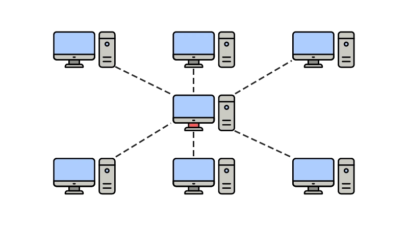
- Bus: Utiliza un único cable para conectar los equipos. Esta configuración es la que requiere menos cableado, pero tiene el inconveniente de que si, si falla algún enlace, todos los nodos quedan aislados.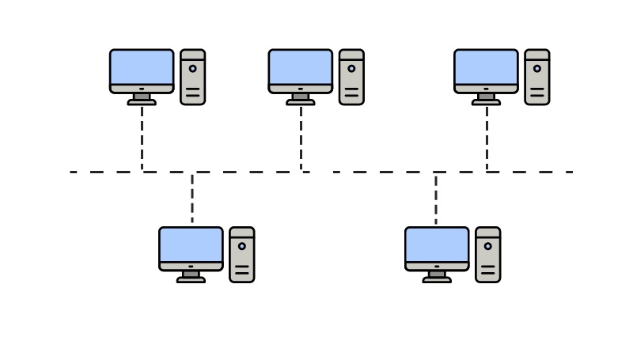
- Árbol: Es una forma de conectar nodos como una estructura jerarquizada.
Los dispositivos están conectados a nodos, y estos nodos a un troncal central.
Es escalable pero puede ser compleja.
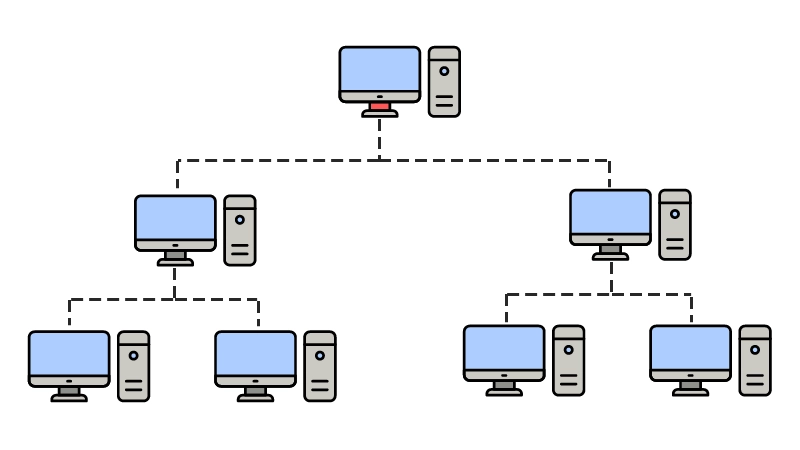
- Anillo: Todos los nodos están conectados a una única vía con sus dos extremos unidos. Al igual que ocurre con la topología en bus, si falla algún enlace, la red deja de funcionar completamente.
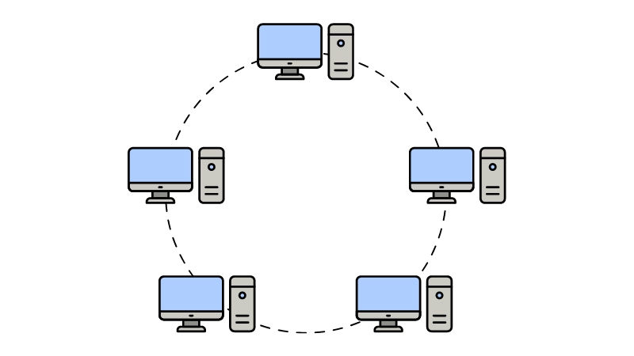
- Irregular : Cada nodo debe estar conectado, como mínimo, por un enlace, pero no existen más restricciones. Esta topología es la más utilizada en redes que ocupan zonas geográficas amplias.
Clasificación de las redes atendiendo al tamaño¶
La localización geográfica de la red es un factor a tener en cuenta a la hora de diseñarla y montarla.
Red de área local o Local Area Network (LAN)¶
Una red de área local es un sistema que permite la interconexión de equipos informáticos que están próximos físicamente. Entendemos por próximo todo lo que no sea cruzar una vía pública : una habitación, un edificio, un campus universitario, etc.
En el momento en que una red debe cruzar una calle, o una vía pública en general, es preciso que una compañía de telecomunicaciones establezca la comunicación, puesto que son las únicas autorizadas para pasar líneas por zonas públicas.
Otra definición más precisa de red de área local, prescinde de la distancia entre las estaciones y especifica que su carácter distintivo reside en que los mecanismos de enlace entre estaciones deben estar completamente bajo el control de la persona o entidad que establece dicha red.
Red de área metropolitana o Metropolitan Area Network (MAN)¶
Generalmente está confinada dentro de una misma ciudad y se haya sujeta a regulaciones locales. Una empresa local construye y mantiene la red, y la pone a disposición del público. Ejemplos: la red que conecta todas las oficinas de una empresa en diferentes partes de la ciudad, o la red de cajeros automáticos de un banco.
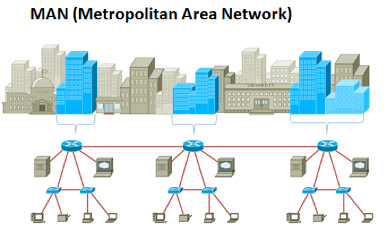
Red de área extensa o Wide Area Network (WAN)¶
Una red de área extendida (WAN) abarca varias ciudades, regiones o países. Los enlaces WAN son ofrecidos generalmente por empresas de telecomunicaciones públicas o privadas que utilizan enlaces de fibra óptica, microondas o vía satélite.
El acceso a las redes WAN suele ser ofrecido por compañías telefónicas (Telefónica,..), y de redes de telefonía Móvil (Movistar, Vodafone, Orange, ), de enlaces vía satélite, etc.
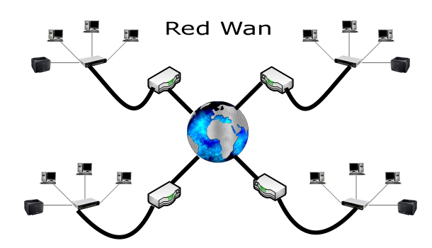
Red de área personal o Personal Area Network (PAN)¶
IEs una red muy pequeña, generalmente alrededor de una persona (Auriculares, Móvil, reloj inteligente, portátiles). Normalmente son redes inalámbricas que utilizan tecnologías bluetooth (radio) o irda (infrarojos).
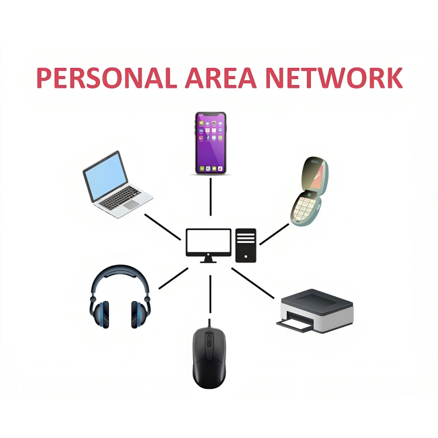
Clasificación de las redes atendiendo a la relación¶
funcional¶
La principal función de las redes consiste en que los ordenadores de la red puedan compartir recursos con los usuarios autorizados del sistema.
La capacidad ofrecida por un ordenador a otros en una red se llama servicio o recurso. Los ordenadores que usan un servicio se llaman clientes y los que lo ofrecen se denominan servidores.
Hay dos maneras fundamentales de establecer la conexión de los ordenadores en la red según la ubicación de los recursos :
Redes ENTRE IGUALES o Peer to Peer (P2P)¶
Cualquier ordenador puede ser cliente y/o servidor. No está claramente definida tal función. Todos los ordenadores ponen a disposición de los demás los recursos que disponen, fundamentalmente discos e impresora. Esta estructura es muy simple pero se hace difícil el control de los recursos.
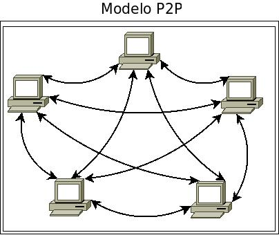
Redes CLIENTE-SERVIDOR¶
En este tipo de distribución está claramente definido los ordenadores que son servidores y cuáles clientes. En este caso se le da privilegio a uno o varios ordenadores. Este equipo o equipos tiene capacidades añadidas en forma de
servicios, denominándose servidores o servers. El resto de los ordenadores solicitan servicios a estos servidores que estarán altamente especializados en la función para la que fueron diseñados creando así una estructura centralizada. Este tipo de organización es mucho mas fácil de administrar.
Ejemplos de servidores: Impresión, discos(o ficheros), aplicaciones, web, correo electrónico, fax, etc.
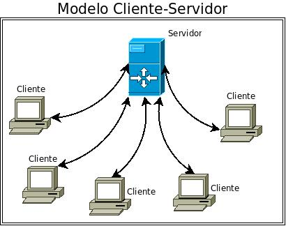
Clasificación de las redes según el modo de¶
transmisión¶
Aquí hablamos de cómo viaja la información en la red entre los emisores y los receptores.
Cada vez que un dispositivo envía un mensaje a través de la red este puede estar dirigido a diferentes grupos de destinatarios.
Los tipos existentes son:
Unicast (unidifusión)¶
Es la comunicación de un emisor a un único receptor. Es el tipo más común en Internet. Ejemplos:
- Cuando abres una página web, tu PC le pide los datos solo al servidor de esa web.
- Al mandar un correo lo haces a una sola persona.
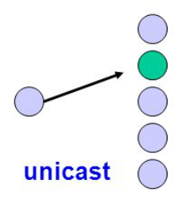
Multicast (multidifusión)¶
Es la comunicación de un emisor a un grupo específico de receptores. No todos los equipos reciben el mensaje, solo los que están suscritos al grupo multicast. Ejemplos:
- Streaming de vídeo en directo a varios usuarios en una red de empresa o campus.
- Una videoconferencia: se envía un solo flujo de datos que llega a todos los participantes que se han unido.
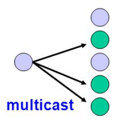
Broadcast (difusión)¶
Es la comunicación de un emisor a todos los equipos de la red local (LAN). Todos los equipos que están en esa red reciben el mensaje, lo necesiten o no. Se utiliza normalmente cuando no conocemos todavía el destinatario exacto, pero necesitamos localizarlo. Este tipo de comunicación tiene el inconveniente de que puede llegar a saturar la red. Ejemplos:
- Cuando un equipo que se acaba de conectar a la red se anuncia para ver si hay algún servidor en la red que le de una dirección IP que pueda autoasignarse.
- Una empresa reparte folletos por todas las casas de un barrio.
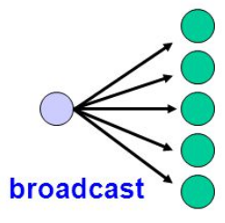